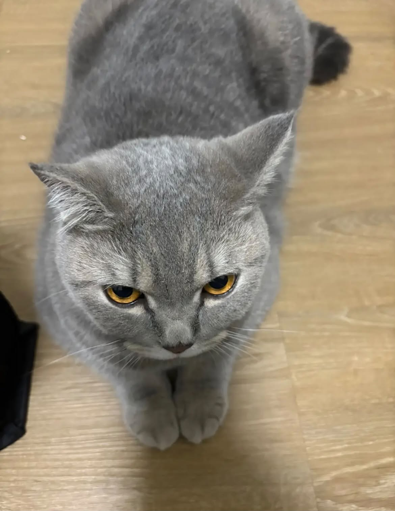

ชื่อ–นามสกุล: เอมี่ เผ่าสุขประเสริฐ
ชื่อเล่น: Amyyyy
สาขาวิชา: วิศวกรรมคอมพิวเตอร์และปัญญาประดิษฐ์
กลุ่มเรียน: 6811 CAI-PIM-G-1
เหตุผลที่อยากเรียน Full Stack Web Development
หนูอยากลองทำเว็บไซต์ด้วยตัวเองค่ะ เวลาเข้าเว็บต่าง ๆ ก็สงสัยว่าเขาทำกันยังไง
ตอนนี้หนูยังเขียนโค้ดไม่ค่อยคล่อง เลยอยากเริ่มเรียนตั้งแต่พื้นฐาน
และค่อย ๆ เข้าใจว่าหน้าเว็บกับส่วนที่ทำงานอยู่เบื้องหลังเชื่อมต่อกันยังไง
ถ้าทำเว็บเล็ก ๆ ของตัวเองได้ก็คงภูมิใจมากค่ะ
ความคาดหวังต่อวิชานี้
หนูหวังว่าจะอ่านโค้ดง่าย ๆ เข้าใจ และเขียนหน้าเว็บเองได้โดยไม่ต้องดูตัวอย่างตลอดค่ะ
อยากรู้ว่าแต่ละคำสั่งใช้ทำอะไร พอทำผิดก็อยากหาจุดที่ผิดและแก้เองได้บ้าง
หนูอาจจะเรียนรู้ช้าหน่อย แต่จะพยายามทำงานและฝึกตามบทเรียนให้มากขึ้นค่ะ
จุดอ่อนด้าน Programming และแนวทางการพัฒนา
จุดอ่อนของหนูคือยังคิดลำดับขั้นตอนเองไม่ค่อยออกค่ะ ตอนดูอาจารย์ทำพอจะเข้าใจ
แต่พอมาลองเขียนเองก็ไม่แน่ใจว่าควรเริ่มตรงไหน บางครั้งลืมปิดแท็กหรือพิมพ์ชื่อไฟล์ผิด
แล้วใช้เวลาหาจุดผิดนาน หนูจะลองฝึกเขียนทีละส่วนจากงานเล็ก ๆ
พิมพ์โค้ดเองแทนการคัดลอก และจดข้อผิดพลาดที่เจอบ่อยไว้ทบทวน
ถ้าลองแก้แล้วยังไม่เข้าใจก็จะถามอาจารย์หรือเพื่อนค่ะ